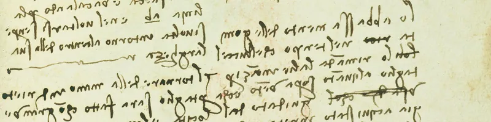

Leonardo di ser Piero da Vinci
Military engineer · Inventor · (also paints)
Florence → Milan
Apprentice in Verrocchio's workshop, Florence
Open to work: yes
Military engineering, architecture, sculpture…